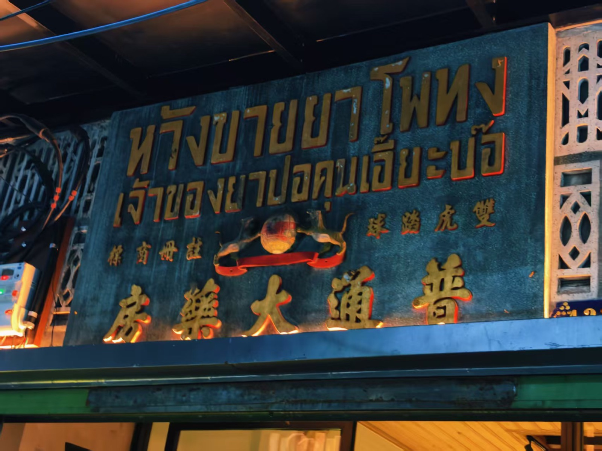
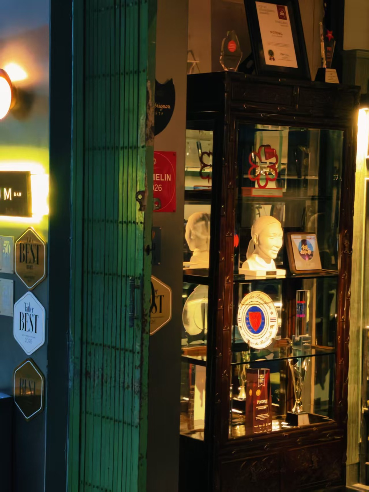
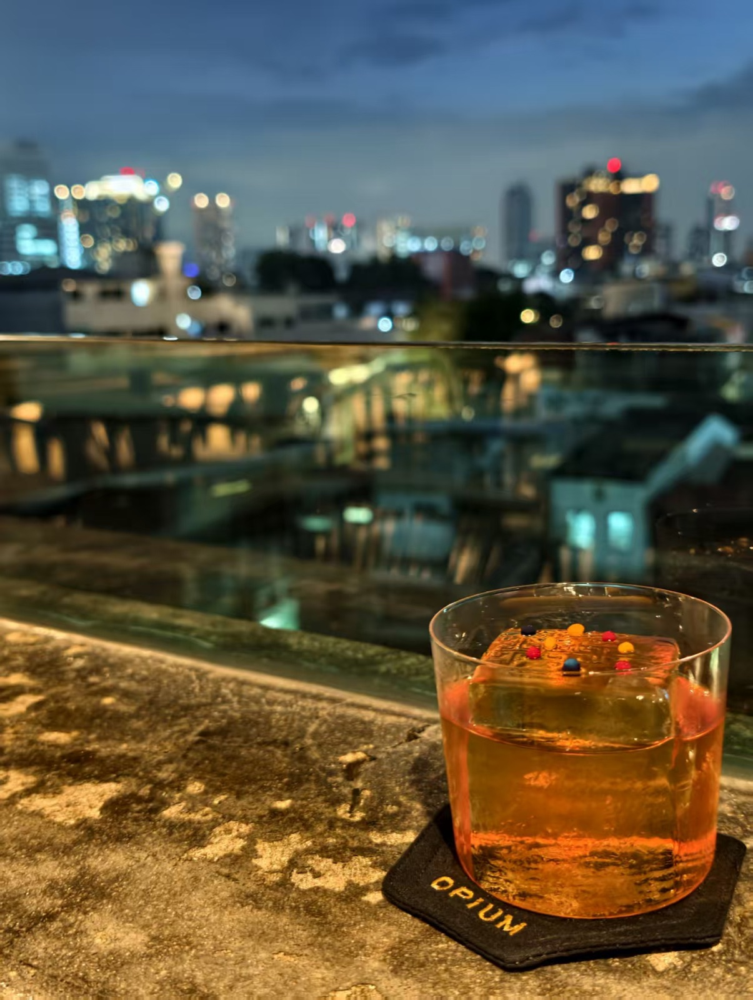
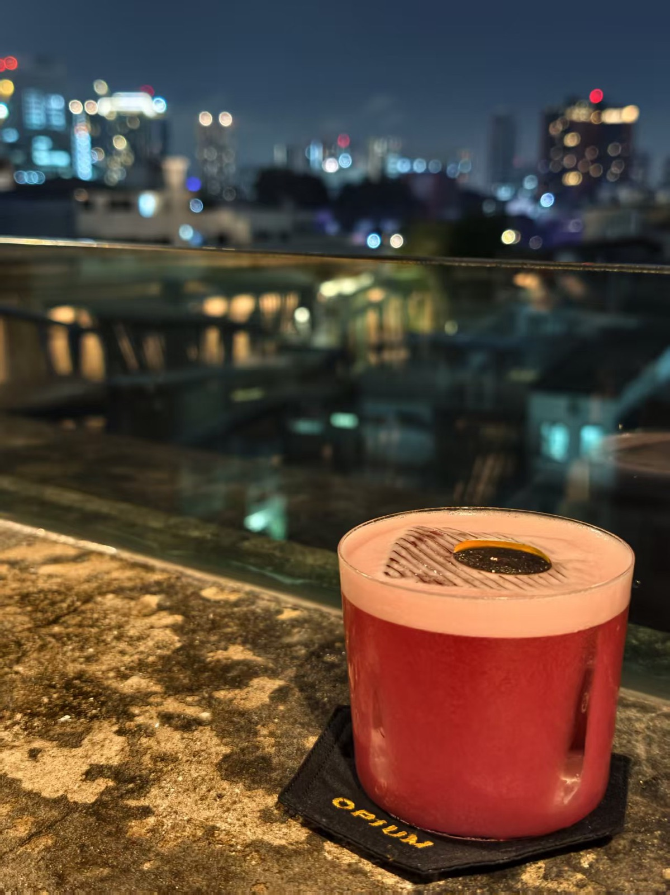
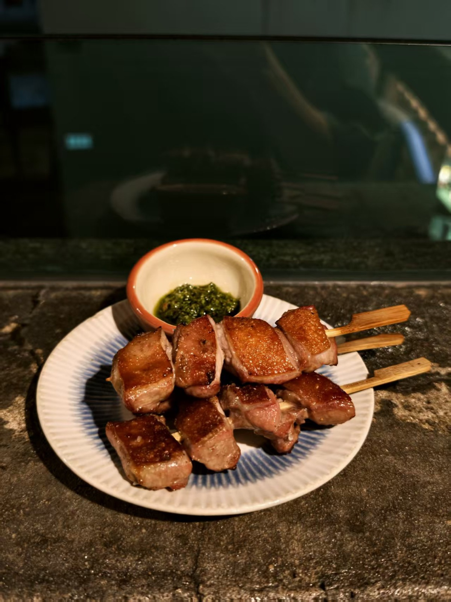
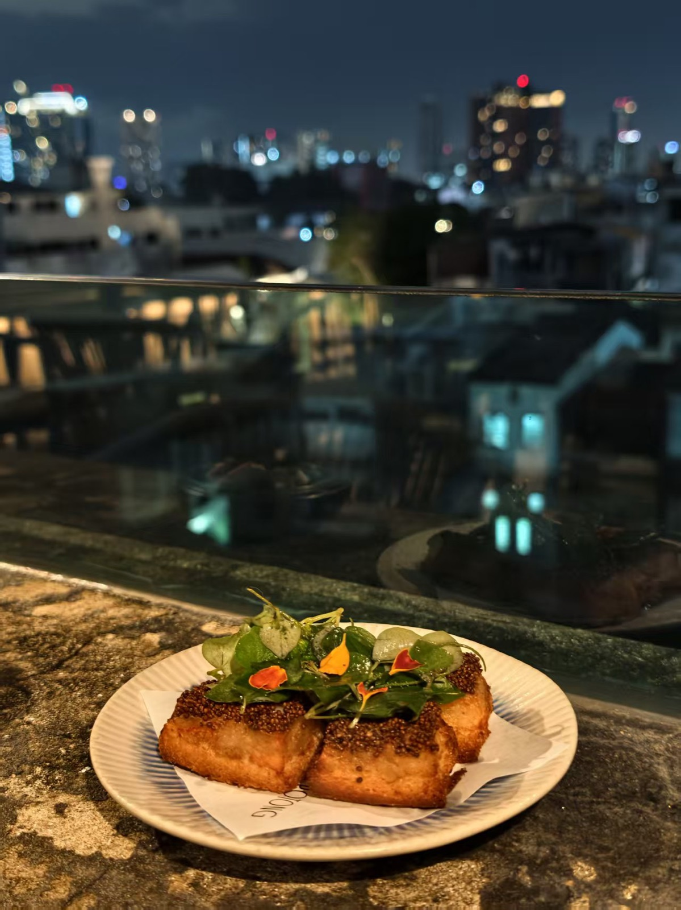
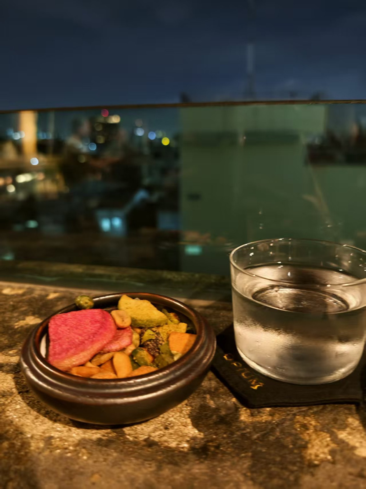

Opium
Opium 藏在唐人街一条不起眼的小巷里，不起眼得像夜里会走过的任何一条小巷。走到一半，黑夜里亮起一块霓虹招牌：普通大药房。简单的门脸，陈列着药房趣味的摆件，和米其林铭牌。在楼下等了一会儿，坐上一台只容得下一人的老式电梯，慢慢升到顶层。

这栋楼有一百二十年历史，是主厨 Pam 家的祖宅，四代人住在楼下做中药。同楼的 Potong 餐厅，店名就取自她曾祖辈的中药铺。「普通大药房」的招牌，是向这段往事致意。那天在唐人街逛，想找一家 Asia's 50 Best 里的店，就寻了过来。

先点了 DOT DOT DOT：麦卡伦十二年兑梅斯卡尔，加蛇皮果和焦糖。药草味和烟熏混在一起，我是照着这家店的调性选的，第一口就觉得很惊艳。第二杯 JAMMING JAMES 是调酒师 Phu 的获奖作品，尊美醇黑桶打底，洛神花果酱带出梅果一样的酸甜，收尾喷一点正山小种。


bar food 是意外之喜。干式熟成十四天的鸭腿串，备长炭烤的，每天只出五份，肉很嫩。虾多士外壳酥脆，里面是一整团虾肉。随酒送的一碟果蔬干，比我吃过的任何一碟都好吃。这些多半出自同楼 Potong 的手笔，水准和用心都在。



特意坐的户外露台。望出去是唐人街的屋顶，没有什么高楼，只有一片城市灯光。一个人在异乡，夜里，手边是恰到好处的酒和美食。那天晚上很幸福，是隔了很久再感受到的那种。